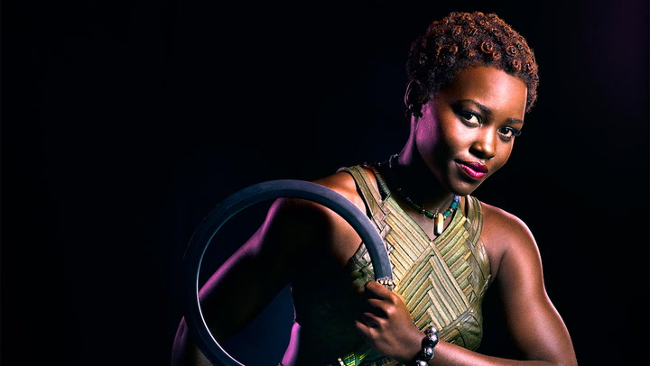
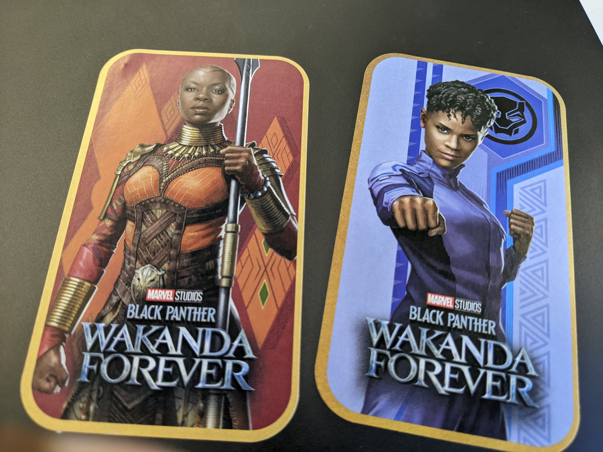
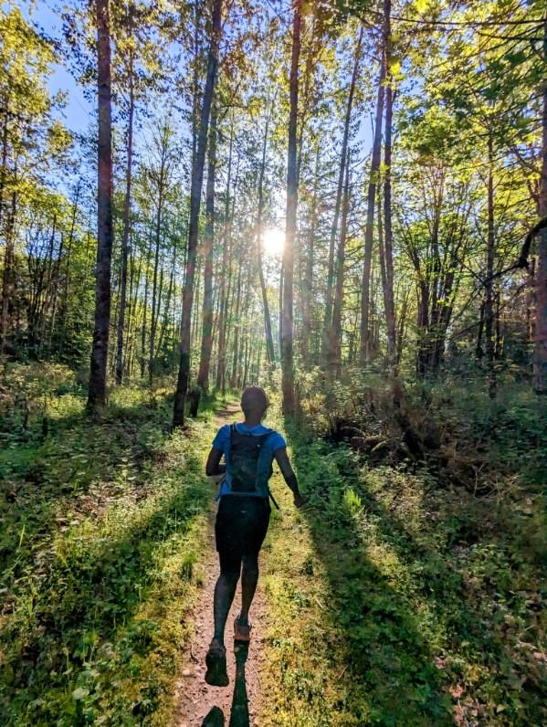

I’ve found myself thinking a lot about Nakia lately, thanks to free stickers I got at a work event. Of all the options, I naturally gravitated to the strong female characters. Shuri and Okoye were easy picks since I aspire to be smart as the former and as strong as the latter, I wasn’t so sure about Nakia.

There is obvious merit to her character; in addition to saving Wakanda on multiple occasions, she is constantly striving it to help the rest of the world that is largely neglected. Clearly she is a strong character but her talent seems all over the place. It then dawned on me that her talent is connecting the dots, she shines through and with other people. My introvert brain simply couldn’t relate to that.
So yes, I’m (still 😄) a (substantially sensitive) introvert; I’m wired to be self-sufficient and avoid people unless absolutely necessary. The choice between emotions and uncertainity of being around people versus the comfort and predictability of my space is pretty clear. Only took a global pandemic and a string of poor desicions to know better; self-sufficiency is a myth, we need each other. The pandemic was dreadful but if any positive came of it was the spotlight it shed on loneliness. We experienced it, felt safe to talk about it and agreed that it is extremely unhealthy.
Photo by Matt Sclarandis on Unsplash
Loneliness is not solitude, although they might look similar. It is the feeling of being entirely on your own; that no-one else understands, cares or relates to what you are going through. As a result, it feels like the weight of the world is on your shoulders. In the absence of counter evidence the mind makes things up; it projects to worst case scenario and blows everything out of proportion. Loneliness breaads a hostile mind which only makes things worse. Honestly I think this is harder than the physical challenges of ultra-running. Every single one of us feels lonely; we should be talking about it.
The antidote of loneliness is not simply socializing but meaningful connection. Meaningful connection is cultivated through presence, intention and communication. Getting it right is tricky especially for an introvert. Here’s why:
- A lot of pseudo connections look deceivingly real.
Proffesional settings, group activities and social media are great avenues to build networks but a lot of times they end up in shallow end, if at all. Now more than ever it is easy to find your people online and “connect” IRL. These kind of encounters are rich in presence and communication but without genuine interest and the intention to stay connected, they fizzle out. A good example are the high school ‘friends’ whose names we no longer remember.
- It takes 2 to tango.
Even when you decide to put in the work, relationships require at least 2 parties and we can’t always control the other half. Considering how different our priorities, interests and timing can be; its a wonder friendships ever work. Moreover, not every relationship is meant to be reciprocal. Some people are simply curious, some people just want to sample experiences; that’s okay as long as we have the right expectations.

- Friendships are awkward.
If you need a reminder, try recalling the first time you met any of your friends. Without shared experiences, inner gossip or common lingo, you had to endure awkward questions, be vulnerable, sometimes a little selfish; it was risky but necessary to get to where you are. Morevoer the lack of rules, contractual agreement or terms of service makes them even more interesting. Mess, fallouts and mishaps are a necessary ingredient to establishing rhythms and boundaries.
Photo by Dušan veverkolog on Unsplash
- There is no finish line.
Making friends is the one thing we get to do at all stages of life. We are never quite done because friendships evolve as we do and there is always room for more. Not exactly ideal for someone who likes completeness.
So yeah, putting yourself out there is hard and risky endevaour but its worth it for so many reasons. First off the alternative is loneliness which is far worse, moreover, a shared life is a colorful life, dare I say a fulfilled life. The third reason is one I’ve never really considered until recently. You have a lot more to give than you think; its selfish to keep it all to yourself. I never imagined my introvert brain would arrive at this conclusion but here we are. I engaged with the trail running community and it warms my heart whenever someone credits me for reaching their goal(s). I shared my journey with Arthritis and ended up raising $2000 (including employer matching) for the Arthritis foundation on my birthday. You’ll never learn what you are capable of if you stay in your comfort zone.

You are not alone; that’s all you need to remember. In the trenches, the world can feel like a dark, cold place but with time you will find the tunnel and there will be light. So find your guy, be someone’s guy, be the Nakia you want to see in the world.